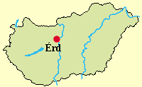
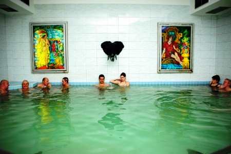

|
|
|
Érd
|
| |
|
Lage:
Érd mit 43.000 Einwohnern liegt südwestlich von
Budapest, direkt an der Landstrasse 6 in Richtung Pécs.
Érd ist eine der nachweislich ältesten Siedlungen
in Europa. 35.000-50.000 Jahre alte Spuren von Jagdsiedlungen der
Neandertaler sind hier bekannt, seitdem war die Gegend laufend bewohnt.
Sämtliche Kulturen der Folgezeit bis heute
wurden nachgewiesen. Die Eigentumsverhältnisse sind
seit der ungarischen Landnahme vollkommen nachvollziehbar. |
 |
Abgesehen vom Bau des Minaretts und eines Djami
haben die Türken hier alles geplündert und praktisch
alles vernichtet. Die frühmittelalterliche Kirche haben sie
als Munitionsdeponie genutzt und eines Tages zur Explosion gebracht.
Mit dem Wiederaufbau und erneuter Besiedlung von Érd konnte
erst nach der Rückeroberung im Jahre 1684 begonnen werden. Die
ersten Siedler im menschenleeren Gebiet waren griechisch-orthodoxe
Serben, katholische Rácen (ein von den Serben und
Türken vertriebenes Volk kroatischen Ursprungs, das einst
etwas südlich von Belgrad lebte), seit dem 18. Jahrhundert
viele Deutsche und später auch noch Slowaken. Nach dem 2.
Weltkrieg siedelten hier viele Roma aus dem heutigen
Rumänien an.
|
|
|
|
Das
Minarett
im
alten Dorf stammt aus dem späten 16. Jahrhundert, es ist mit
23 m das kleinste Minarett in Ungarn. Die Landschaft ist hier
Flachland, von oben bietet sich daher ein schönes
Panoramablick in weite Entfernungen.
Der Erker und die Turmspitze des Minaretts waren einem Blitzschlag zum
Opfer gefallen, die Bevölkerung nahm die Trümmern und
den Djami als Baustoff mit. Eine späte
Rekonstruktion in den Jahren 1962-65 konnte erst anhand einer Zeichnung
aus 1847 vorgenommen werden. Dabei wurde nur Beton und zwar soviel
Stahlbeton verwendet, dass eine Rekonstruktion zwecks mohammedanischer
Nutzung zum Gebet künftig ausgeschlossen ist. Der
ursprüngliche Teil des übriggebliebenen Minaretts
unter dem Erker wurde 1999 konserviert. |
|
 |
Nur 25 km von der Kettenbrücke in
Budapest entfernt, am Donauufer gelegen ist das Thermalhotel
Liget, das über eigene Thermalquellen verfügt und seit 1990
rd. 25 Jahre lang
Kurbehandlungen angeboten hatte. Das Hotel wurde brupt
geschlossen und ist bis auf weiteres aus technischen
Gründen geschlossen. Eine Reihe von
Reparaturarbeiten sind anfällig.
Adresse: Római út 9,
H-2030 Érd. |
| |
Érd verfügt auch über ein
. Es ist ein Lehrbad, das der Öffentlichkeit
zur Verfügung steht und mit preisgünstigem Schwimmunterricht
auftrumpft.
Adresse: Kossuth
Lajos utca 82, H-2030 Érd
|
| |
|
Ungarn-Tourist Team

|
| |
| |
|